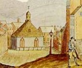

by
Stefan Bielinski
Wilhelmus Mancius was born in September 1738. He was the first child born to German-ancestry, Dutch Reformed Domine George W. and Cornelia Kierstede Mancius of Kingston.
During the early 1760s, he came to Albany on business. His name appeared on a petition from Albany merchants in 1764. Early in 1766, he joined other Albany men in signing a document protesting the Stamp Act. His third ward house was included on the city assessment roll later in the year.
In December 1766, he married Albany native Anna Ten Eyck. By 1784, their eight children had been baptized in the Albany Dutch church where both parents were pewholders.
Initially a merchant, notary, and contractor of the city, by the outbreak of the Revolution he was handling medical supplies and accompanied the militia as a "doctor" in 1776.
Reputedly trained by his father, Mancius became a physician in Albany who also sold medicines and medical supplies. He later became the partner of newcomer Dr. Hunloke Woodruff. They became pillars of the post-war Albany medical community - training physicians and serving as officers of the Albany County Medical Society.
In March 1788, he joined with other Albany antifederalists in publishing a list of their objections to the proposed constitution.
 Although he had received title to some land on the hill near the Masonic Lodge and elsewhere on the outskirts of the city, his family lived in a large house on Market Street which also housed his business and medical enterprises. In 1795, a back room served as the Albany Post Office with his son, Jacob, as postmaster. twenty-nine-year-old Jacob was shown on the census in his father's house in 1800. Jacob then was succeeded in the post office by his older brother George W. Mancius.
Affable and eccentric, uniquely talented Wilhelmus Mancius died in October 1808 at the age of seventy. His widow and children inhabited the "Mancius house" for many years.
notes
 Sources: The life of Wilhelmus Mancius is CAP biography number 6628. This profile is derived chiefly from family and community-based resources. A charming memoir of his life appears in a chapter on physicians in Annals of Albany, volume 9, 90-1.
Sources: The life of Wilhelmus Mancius is CAP biography number 6628. This profile is derived chiefly from family and community-based resources. A charming memoir of his life appears in a chapter on physicians in Annals of Albany, volume 9, 90-1.
first posted: 1/15/04